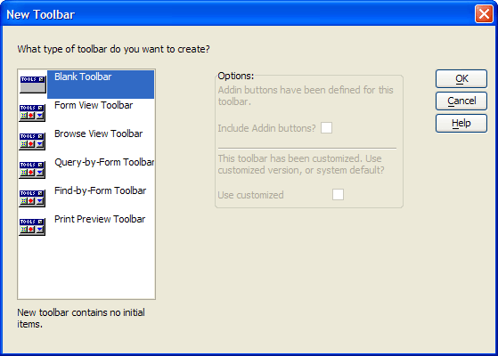

Controlling Record Navigation with the Invoice Toolbar
The normal behavior of the record navigation buttons ( 
 ) is defined
by the item on form that has focus. Assume you have a form with an embedded
browse. Place the cursor on a form field. The forwards and backwards record
navigation will be defined by the currently activate table index. Place
the cursor on the browse. Now, forward and backwards record navigation
will be defined by the records of the browse.
) is defined
by the item on form that has focus. Assume you have a form with an embedded
browse. Place the cursor on a form field. The forwards and backwards record
navigation will be defined by the currently activate table index. Place
the cursor on the browse. Now, forward and backwards record navigation
will be defined by the records of the browse.
The Invoice toolbar redefines the meaning of the navigation buttons, so that they always move forwards and backwards through the form's records, even if the cursor is on the embedded browse.
Procedure: Creating a Toolbar with Redefined Navigation Buttons
Click the Code tab of the Control Panel.
Select New > Toolbar.
Select "Form View Toolbar" and click OK.
Select the First button
 . Change the Button Action
field to "Run Xbasic". Enter the following Xbasic code into
the type-in box.
. Change the Button Action
field to "Run Xbasic". Enter the following Xbasic code into
the type-in box.Select the Previous button . Change the Button Action field to "Run Xbasic". Enter the following Xbasic code into the type-in box.
Select the Next button
 . Change the Button Action
field to "Run Xbasic". Enter the following Xbasic code into
the type-in box.
. Change the Button Action
field to "Run Xbasic". Enter the following Xbasic code into
the type-in box.Select the Last button . Change the Button Action field to "Run Xbasic". Enter the following Xbasic code into the type-in box.
Click Save As, enter the toolbar's name in the Name field, and click OK.

|
topparent.fetch_first() |
|
topparent.fetch_prev() |
|
topparent.fetch_next() |
|
topparent.fetch_last() |
Procedure: Attaching a Toolbar to a Form
Right click on the form's background.
Select Properties....
Click the Menus/Toolbars tab.
Select the new toolbar in the Toolbars/Views list.
Click OK.
See Also
Creating the Navigation Toolbar